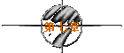
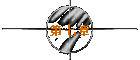

|
| |
※第一次的亲密接触※
written by jht.

因此对陌生的两个人而言，网路有时只能缩短认识的时间而已..
未必能拉近彼此的距离..
「痞子..网路上的我..跟现实的我..会有很大的差异吗？..」
网路就像一层很安全的防护罩，不仅遮蔽了风雨，但同时也挡住了阳光..
隔著这层防护罩去观察一个人，当然会有误差..
但对于你..轻舞姐姐..或是飞扬妹妹..我却没有隔著防护罩看人的感觉..
或者应该说是..你根本没有这层防护罩。
现在你若送来半形符号":)"..我彷佛就能看见你微微扬起的嘴角..
你若送来全形符号"：）"..我彷佛就能看见你满是笑意的眼神..
你若送来"呵"..我彷佛就能听见你那像麦当劳薯条的笑声。
所以网路不仅缩短了我们认识的时间..更拉近了我们之间的距离..
「痞子..我很希望你现在不是彷佛..而是根本就能看到我对你的微笑..」
是ㄚ！..我现在也很想看到你的微笑..
不过这也是网路上的另一特点：虽然迅速，但并不完美..
而且如果现在真能看到你..我又要被你美丽的外表所蒙蔽..
于是不得不狗腿一番..
倒不如像现在一样..隔著萤幕..然后仔细去品味另一种形式的你..
「痞子..为什么你一看到我..就得称赞我的外表呢？..
难道你不怕我会因此而觉得你很肤浅吗？..」
这那有为什么..看到美女便称赞是属于男人的反射动作..不受大脑所控制..
我当然知道这有拍马屁之嫌..奈何我笨拙的头脑无法阻止我灵活的嘴巴..
一旦我的眼睛接触到美丽的形象而传递到大脑..
在大脑尚未下达指令是否该赞美时..我的嘴巴就已经决定先斩后奏了..
这叫“嘴在外，脑命有所不受”的道理..
也叫“箭在弦上，不得不发”..
而且与其不讲赞美你的话而让我觉得昧著良心..
倒不如讲真话赞美你而让你觉得我很肤浅..
这也是另一种形式的“两害相权取其轻也”的道理...
「痞子..可以了ㄛ！..我会被你训练得愈来愈骄傲ㄋㄟ..」
『没办法..这是孟子教我的..“余岂好赞美哉..余不得已也”..』
「痞子..别再三八了..」
『好吧！..今天的赞美就到此为止..轮到你赞美我了..』
「痞子..与其讲假话赞美你而让你觉得我很肤浅..
倒不如不讲赞美你的话而让我觉得对得起良心..
这也叫“两害相权取其轻也”的道理..」
现世报来得真快..
原来网路上果真什么都迅速..连报应都来得特别地快..
「痞子..其实在网路上我反而更可以看清楚你真正的模样..
也就是说..I see you true color..」
『“I see you true color ”？..这句话的意思是..“我看你真色”？..
你真的觉得我很“色”吗？..』
「痞子..你的英文要加强了..这是辛蒂露波的一首英文歌..
true color 的意思是真正的你..而不是说你真色..」
喔！..原来如此..吓我一跳..
在外文系女孩的面前得注意自己的英文程度..
就像在水利系男孩的面前得记住要节约用水..
「痞子..那你能用一句话形容我的外表以及你对我的感觉吗？..」
『很简单..就是“娇艳欲滴”..』
「小女子才疏学浅、资质驽钝..愿闻其详..」
『因为你“娇艳”如花..于是我口水“欲滴”..所以是“娇艳欲滴”..』
「呵呵：）..痞子..我会让你害得睡不著觉..」
对ㄏㄡ..差点忘了明天还有约..不能像平常一样逗她..
该让她睡了..
『你该去睡了ㄛ！..』
「再一下下就好..而且你还没告诉我..你累了吗？..」
『还好..有点累..那你呢？..』
「我好累ㄋㄟ..不过没上线跟你说晚安的话..我真的会睡不著..」
『me too..』
既然双方都很累了..为什么还要做这种无聊的事？..
躺下去睡觉不是很好？..何苦一手打键盘，一手打呵欠？..
我和她也许是同时想到了这层道理..所以接下来是一阵沉默..
「痞子..明天我们看那部电影呢？..」
『到时再说..反正重点是跟谁看..而不是看那片..』
阿泰的名言..稍微修改一下..还是很好用的..
「痞子..那你明天骑车小心点..我会在楼下等你..」
『OK..冲著你这句话..我会小心的..那你爬楼梯也要小心点..』
「痞子..别再无聊了..明天见罗！..晚安..:)..」
『Good night..See you later..So long..Bye-bye..晚安..Sayonara..
卡早睡卡有眠..』
一觉醒来，12点半多了..哇ㄌㄟ..
今天是1997年的最后一天..因为是星期日..所以得穿紫色内裤..
幸好当初在成功岭上的训练还算有效..洗澡刷牙加洗脸仅花了X分钟..
而且X≤10..不禁又开始陶醉于自己的机动敏捷..
但现在不是陶醉的时候，赶紧拿了钥匙，冲下楼去..
跨上我的野狼，在它尚未热身完毕时，我油门一催，扬长而去..
我的飙车技巧，宛如游龙与狡兔，很可惜当初没去混飞车党或当飙车族..
突然想到昨晚答应她骑车要小心的..大丈夫岂能言而无信？..
所以我在闯红灯时，很小心地注意看有没有交通警察..
瞄了一下手表，危险了..可能会迟到个几分钟..
我跟轻舞飞扬只要一相约，断无迟到之理..
连续场次的安打记录，绝不能在这场球中断..
“人之将死，其脑也快”..急中生智的结果..将手表拨慢五分钟..
而且在接近她家的巷口时，放慢了车速..
「痞子..你早ㄚ！..」
她讲话好像有点嘲弄的味道..并举起她的左手手腕，在我面前晃一晃..
『你的手表真漂亮..果然是“帅哥骑烂车，美女戴好表”..』
「痞子..别装蒜了..你是否该说些什么呢？..」
『Sorry..我疏忽了..我只注意到你的手表..忘了称赞你那洁白如玉的手腕..
我真可说是“见木不见林”..手表再怎么漂亮..跟你的纤纤玉手比起来..
就像萤火之光碰到皓月之明..不堪一击..不堪一击ㄚ！..』
「痞子..你还在装傻..你迟到3分钟了..我的手表现在是1点03分..」
『是吗？..可是我的手表现在是12点58分ㄋㄟ..』
我也举起我的左手手腕，在她面前晃一晃..
「呵呵..好吧！..原谅你了..」
『看那部呢？..带漂亮手表的轻舞飞扬小姐..』
「你先说吧！..调慢手表时间的痞子蔡先生..」
原来她还是知道这种手法..我只好乾笑了几声..
『阿泰说“铁达尼号”不错..你觉得呢？..』
「真巧..我室友也跟我推荐这部片子..」
『那她看完后有哭吗？..』
「有ㄚ！..哭得唏哩哗啦的..所以我多带了一条手帕和一包面纸..」
『那到南台戏院好吗？..2点20分有一场..』
「好..我听你的..」
嗯..还有很多时间..仔细看一看她居住的环境..
这条巷子很静..又有一些花花草草..使这条巷子看起来很美..
果然是地灵人杰，什么人住什么环境..这的确是个出产美女的好地方..
其实我住的地方也不错，但可惜的是巷口总会有一堆垃圾..
我想大概是因为阿泰也住在那里的关系吧！
「痞子..别发呆了..听说人很多ㄋㄟ..早点去买票吧！..」
『好ㄚ！..走吧！..你有机车吗？..』
「没有ㄋㄟ..我只有那辆像法式牛奶咖啡的脚踏车而已..」
『那我只好用这辆像高雄港海水的野狼机车载你了..不介意吧!?..』
「我不会介意..只是会有点嫌弃..呵呵..」
她从背包里拿出了一副太阳眼镜..不用说..镜片一定是咖啡色的..
今年台南的冬天很温暖..我在耶诞节那天还穿短袖的..
所以她今天的穿著很简单..米色的长裤..橘红色的线衫..
『今天不穿咖啡色的衣服了吗？..』
「呵呵..痞子..今天休兵一天..免得你跟我在一起时老是担心我会考你..」
『没错..这的确是认输的好藉口..』
「呵呵..痞子..我不能晒太阳..只好戴副太阳眼镜..不介意吧!?..」
『我不会介意..只是替你美丽的眼睛觉得有点可惜..』
「痞子..别闹了..快走吧！..」
坐上我的机车后座，她的手轻轻勾著我裤子上的皮带环..
因为那只野狼的后座并无铁杆..所以她没有任何可以抓住的地方..
阿泰常羡慕我有这种配备..他说这样一来..只要换档时故意稍有不顺..
就可以感受到后方袭来的波涛汹涌..
不过我才没那么无聊..我反而更加小心地换档..
『今天天气真好..是吧!?..』
我从没有转身跟她聊天的经验..所以讲出这么老土的话是可以被原谅的..
「对ㄚ！..今天太阳也很圆..不是吗？..呵呵..」
她总是能用笑声适时地化解我的紧张..
『听说“迷死佛陀”和“Old Lady”（欧蕾）的防晒系列不错..
下次带你去买..』
「好ㄚ！..你买给我的话..我就会擦..」
“是非只为多开口，烦恼皆因强出头”..古人诚不欺我也..
今天的天气真的很好..不冷不热不湿不闷..身在台南的确是一种幸福..
虽然说“生命诚可贵，罚钱价更高”..但我们都没带安全帽..
微风轻轻地吹拂..我闻到了她身上淡淡的香气..
记得我有次坐远航的飞机，因为忘了系安全带..
一位美丽的空中小姐弯下腰来提醒我时..她的身上也有类似的香味..
从此以后..我上飞机便不系安全带..除非碰到那种空中欧巴桑..
男人也算是一种奇怪的动物..很容易让他的视觉影响到他的嗅觉..
所以对男人而言..凡是美女，其人必香..这就是所谓的“以偏概全”..
即使我很小心地换档，但在加速与煞车之间，我们难免会有些碰触..
而且她总在我耳边轻声细语..我不知怎的，一直觉得耳根发烫..
我宁愿相信那是因为一般人呼出的气体中..含有高量二氧化碳的因素..
虽然我知道这不是事实..
我终于能体会“倚天屠龙记”第四集里，张无忌抱著赵敏时..
非常希望路能永远走不完的感觉..
进了友爱街..经过南台戏院的大门..
哇sai！..挤了一堆人..难道今天是看免费的？..
只好转到中正路..找找可以停车的地方..
「痞子..你乾脆寄车好了..干嘛还要绕来绕去？..」
『别开玩笑了..这种行将就木的烂车..去寄车会被笑的..』
「呵呵..痞子..连这种钱也省..你真的不是普通的小气ㄛ..」
「痞子..你又在痞了..待会你的野狼被人宰了怎么办？..」
『不会啦！..看到这么老旧的野狼..一般人会敬老尊贤..不会欺负它的..』
南台戏院排队的人龙..真的很长..2点20的电影..现在也不过才1点40而已..
而且很奇怪..几乎都是一男一女一起排队..
『你到里面看看海报..我排就好..』
别人可以搂搂抱抱、卿卿我我..她留在这里..只会让我触景伤情而已..
「不要..我要在这里陪你..」
『这样你会很无聊的..』
「跟你在一起怎会无聊呢？..让我陪嘛！..」
其实我很感激这种拥挤的人潮..这样我跟她之间的距离便更近了一些..
在网路上，我们隔著萤幕..在麦当劳，我们隔著一张桌子..
在机车上，我们隔著我的背影..而在这里，我们根本没有距离。
她站在我左边，右手臂不时地碰触到我的左手臂..
我们偶而穿插几句没有意义的对白..这种感觉很舒服..
即使买不到电影票..我也心甘情愿..
今天真好..而让今天美好的..不仅是天气..还有此时等待的心情..
学生票一张也要240元，换言之，两张就要480元..
这次真的是受伤惨重..我皮包里的先锋部队，已经全部阵亡了..
由于她在我左手边，而我用右手掏钱..
所以我在掏钱时，不能让她有阻止我的机会..实在是一大失策..
2点10分左右，买到了票..一张是11排13号..一张是11排15号..
「哇！..痞子..11排13号ㄋㄟ..跟你生日同一天..」
『嗯..所以呢？..』
「所以这个位置我要坐..这张票我要保存起来..可以吗？..」
『当然可以..如果你坚持要付钱..我也会依你..』
「痞子..你别担心..今天我不会跟你争著付钱的..」
担心？..我担心的是你不跟我争..
进了电影院，刚坐下没多久..灯光也正好暗了下来..
我看电影时是绝对不说话的..所以我的嘴巴也终于有了休息的机会..
接下来的三个多小时里..我仔细地看著这部久仰大名且争议性强的电影..
我不是个浪漫的人..所以不被浪漫的情节所感动是可以理解的事..
除了Jack在沉入海底前跟Rose所说的对白：
“Rose, listen to me.. Listen...
Winning that ticket was the best thing that ever happened to me..
It brought me to you... And I'm thankful, Rose... I'm thankful...”
虽然我也叫Jack..但我比电影上的那个Jack幸运多了..
我不用赌“梭哈”..也不必冒著生命危险搭上铁达尼号..
我只要打开pc..上个网..便能认识现实生活中的Rose..
不过他比我幸运的是..他还会画画..于是电影上的Rose甘愿脱光光让他画..
虽然他一付很专注的模样..好像很小心谨慎地慢慢画..
但我想他一定是故意慢慢地画的..男人嘛！..大家心照不宣也就是了..
不然你叫他画曾文惠..他一定一下子就搞定了..
而她..反应就不是这么平淡了..
她手上一直拿条手帕stand by..随著电影愈到最后..她擦拭眼角的频率愈高..
当Jack要Rose答应他坚持到底，绝不放弃求生的念头时..
电影上Rose说：“I promise... I will never let go, Jack... I'll never le
她竟也跟著小声地说：“I will never let go, Jack...”
而当Jack沉入海底的瞬间..她背包的拉链也同时打开..备用手帕正式登场..
席琳狄翁这个娘们，偏偏又在片尾唱起“My heart will go on...”
彷佛被歌声所感染..她于是“My tears will go on...”
『散场了..我们走吧！..』
我站了起来，小声地跟她说..因为我觉得此时任何一点小扰动..都会令她崩溃..
她坐在座位上，不发一语地凝视著我..
待续
|


 
